빙하가 녹으면 인류 재앙으로 돌아옵니다
지구온난화로 북극의 온도는 빠르게 상승하고 빙하는 더욱 빠르게 녹아가고 있습니다
빙하가 무너져 내리는 경고를 결코 무시해서는 안됩니다
-
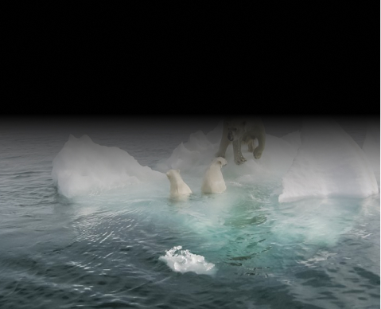 28조 톤23년 동안 녹은 빙하의 양
-
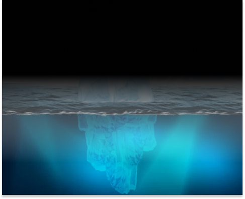 27cm앞으로 높아질 지구 해수면
3월의 소식
-
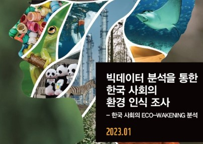 보도자료WWF,빅데이터 분석을 통한 한국 사회의 환경 인식 조사 결과 발표
26 Mar 2023
-
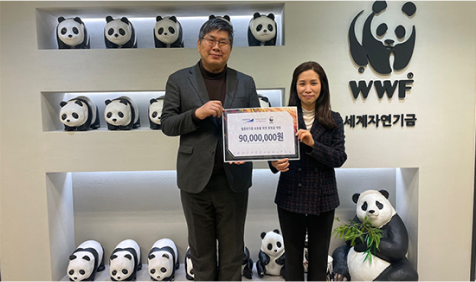 소식WWF,한솔섬유와 함께 캄보디아 메콩강 유역 샴(Siamese) 악어 보전이니셔티브 지원
27 Mar 2023
-
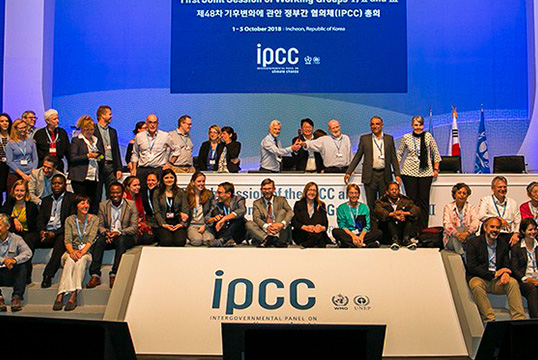 보도자료IPCC 제6차 평가 보고서 발간에 대한 WWF 입장
20 Mar 2023
-
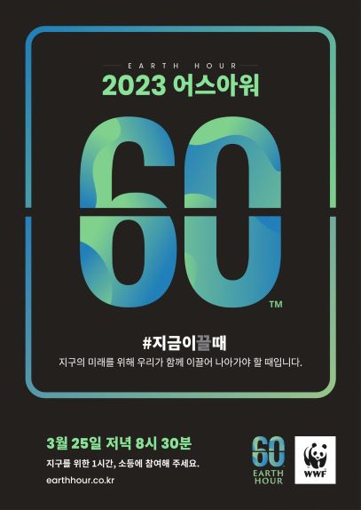 보도자료WWF, ‘지구를 위한 한 시간’ 어스아워 개최
20 Mar 2023
-
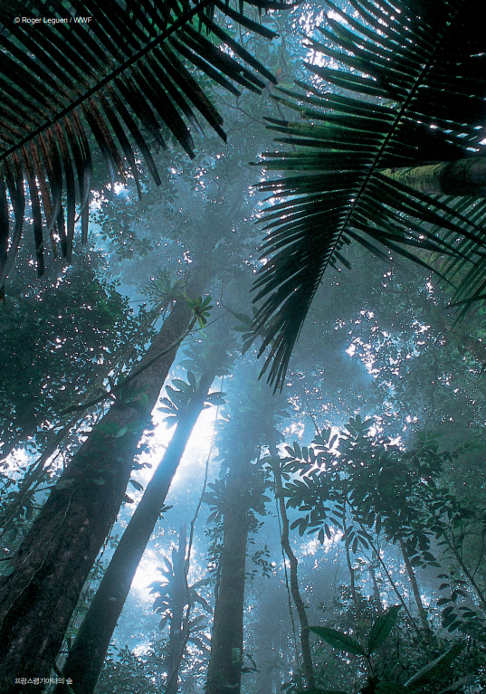 보도자료WWF, 아시아 46개 은행 지속가능 금융 도입 성과 분석 발표
11 Mar 2023
-
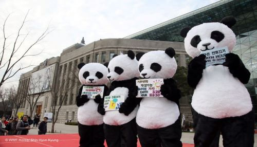 소식에코웨이크닝, 환경 사랑 이젠 실천으로 보여줄 때
20 Mar 2023
WWF 활동 분야
사람과 자연이 조화로운 미래를 만들어가기 위해 6개 보전 영역에 걸쳐 활동하고 있습니다
-

지금 지구의 기후는 급속도로변화하고 있으며, 이와 같은 기후위기는 인류와 생물, 자연을 위협하고 있습니다. 화석연료의 무분별한사용,산림 훼손, 온실가스 배출 등은 전례 없는 기상이변 현상의 주원인이자 우리 자연에 더 큰 악영향을 끼치는 행위입니다.
-
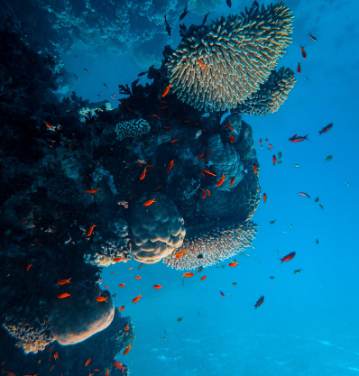 해양바다는 현재 위험에 처해 있습니다.플라스틱과 같은 오염 물질이 바다로 흘러 들어가 해양을 오염시키고 생태계를 파괴합니다. 남획과 불법어업, 혼획은 많은 해양생물종들을 멸종위기로 내몰고 있습니다. 이와 동시에 지구온난화는 수온을 상승시켜 이 모든 위협을 증대시키는 요인으로 작용하고 있습니다.
-
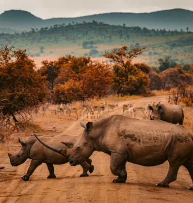 야생동물지난 50년간 전 세계 포유류, 새, 어류, 파충류, 양서류의 개체군의 규모는 평균 68% 감소했고, 현재도 많은 야생동물들이 빠른 속도로 멸종되고 있습니다. WWF의 활동은 단순히 야생동물만 돕는 것이 아니라, 풍요롭고 다양한 생태계를 보호하면서 전 인류가 자연이 주는 혜택을 계속해서 누릴 수 있도록 합니다.
-
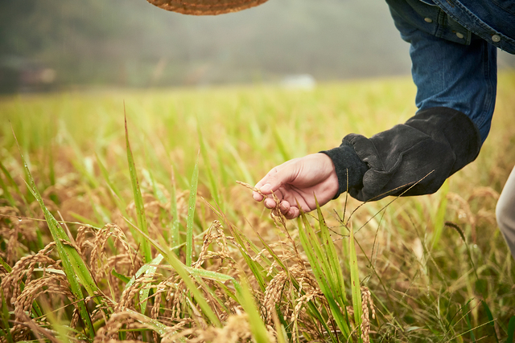 식량자연을 보전하고 인류에게 충분한 지속가능한 식량 생산 시스템의 구축이 그 어느 때보다 중요해지고 있습니다. 이미 모든 토지의 3분의 1이 농작물과 가축 생산에 사용되고 있음에도 지속가능하지 않은 식량 생산 시스템으로 인해 산림 파괴와 서식지 손실이 발생하고 있습니다.
-
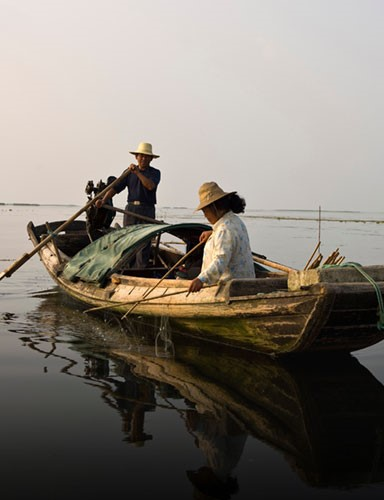 담수대부분의 담수는 빙하, 만년설, 영구동토 등 지리적으로 쉽게 접근할 수 없는 곳에 위치해 있으며, 우리가 사용할 수 있는 물은 약 1%도 되지 않습니다.그러나 현재 이 소중한 원천마저도 위협받고 있습니다. 기후 변화, 인구 증가 및 소비 패턴 변화 등 다양한 요인이 담수 생태계를 위협하고 있습니다.
-

목재와 종이의 수요 증가로 인해 발생하는 불법적이고 지속가능하지 않은 벌목은 전 세계 산림 훼손의 주요 원인이 되고 있습니다. 불행하게도 인간 활동의 영향으로 이미 전 세계 숲의 약 40%가 훼손되었습니다. 그리고 우리는 매년 1,000만 ha의 숲을 잃고 있습니다


WWF와 후원자님이 함께 만들어가는 변화
-
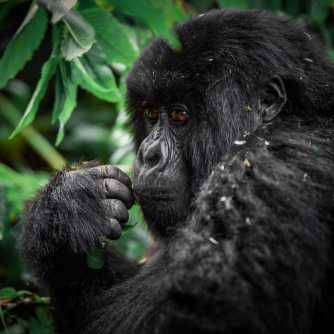 야생 마운팅 고릴라가 2010년대비 25%증가하여 현재1천마리 이상 서식 중입니다.
-
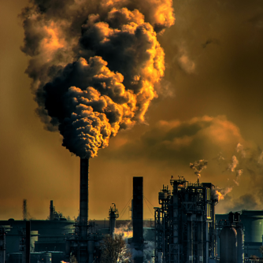 IPCC보고서에 WWF의 지구 온난화 1.5도 상승제한 요구가 반영되었습니다.
-
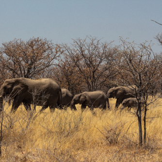 글로벌 보험업계가 킬리만자로 국립공원같은 세계 자연유산 보호를 서약하였습니다.
-
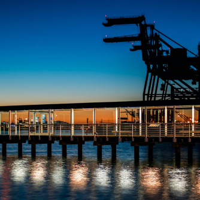 벨리즈 연안 내 해양석유 및 가스 탐사활동금지 법안이 통과되었습니다.